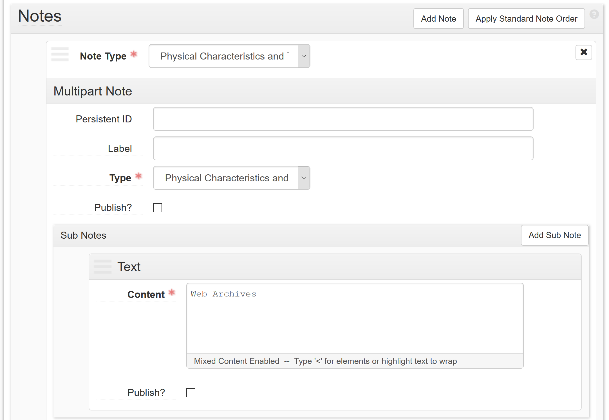
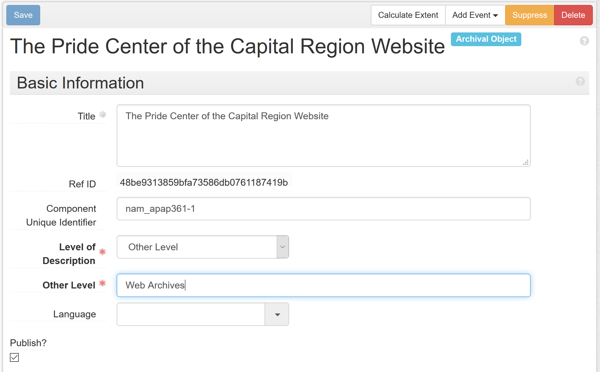
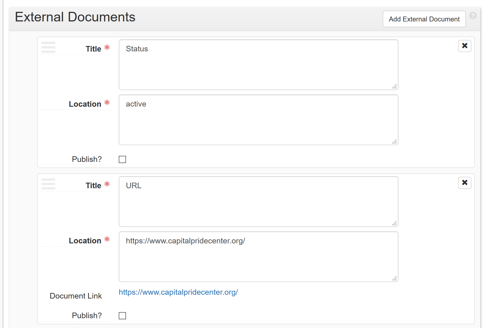

<!doctype html>
<html lang="en">
    <head>
        <meta charset="utf-8">
        <title>reveal-md</title>
        <link rel="stylesheet" href="css/reveal.css">
        <link rel="stylesheet" href="css/theme/night.css" id="theme">
        <!-- For syntax highlighting -->
        <link rel="stylesheet" href="lib/css/zenburn.css">

        <!-- If the query includes 'print-pdf', use the PDF print sheet -->
        <script>
          document.write( '<link rel="stylesheet" href="css/print/' + ( window.location.search.match( /print-pdf/gi ) ? 'pdf' : 'paper' ) + '.css" type="text/css" media="print">' );
        </script>
		<script>
  (function(i,s,o,g,r,a,m){i['GoogleAnalyticsObject']=r;i[r]=i[r]||function(){
  (i[r].q=i[r].q||[]).push(arguments)},i[r].l=1*new Date();a=s.createElement(o),
  m=s.getElementsByTagName(o)[0];a.async=1;a.src=g;m.parentNode.insertBefore(a,m)
  })(window,document,'script','https://www.google-analytics.com/analytics.js','ga');

  ga('create', 'UA-87697094-1', 'auto');
  ga('send', 'pageview');

</script>
    </head>
    <body>

        <div class="reveal">
            <div class="slides"><section  data-markdown><script type="text/template">##Automating Web Archives Records in ASpace

####Gregory Wiedeman
####University Archivist
####University at Albany, SUNY

http://gwiedeman.github.io/presentations/slides/skillshare.html
http://bit.ly/2dGviYp
</script></section><section  data-markdown><script type="text/template">
## Web crawls are Archives too!

* UAlbany Web Archiving program with Archive-It since 2013
* Mission of preserving permanent public records available only online
* No real public access or use
</script></section><section  data-markdown><script type="text/template">
## Web crawls are Archives too!

* Web collections have paper equivalents
* Bound Course Bulletins, 1845-2014
* http://www.albany.edu/undergraduate_bulletin/
* http://www.albany.edu/english/under_course_schedules.php
* http://www.albany.edu/informationstudies/ist_courses.php
</script></section><section  data-markdown><script type="text/template">
## Web crawling is different

* Process of web crawling is completely separate from archival description
* Crawls all of albany.edu
* New pages collected monthly or even daily
* Complex acquisition process
* Difficult to convey provenance
</script></section><section  data-markdown><script type="text/template">
## Automate ASpace Records with APIs

* Arrange and describe online archival records in ASpace, just like paper
* Use ASpace and Archive-It APIs to update extents, dates, notes
* You can use Archive-It collections or anything collected by the Internet Archive
</script></section><section  data-markdown><script type="text/template">
## Internet Archive and Archive-It CDX API

* CDX servers used for Wayback Machine
	* for each capture:
		* timestamp
		* Warc reference
		* mime type
		* http response
		* hash
* http://wayback.archive-it.org/3308/timemap/cdx?url=http://www.albany.edu/undergraduate_bulletin/
* https://web.archive.org/cdx/search/cdx?url=http://www.albany.edu/undergraduate_bulletin/
</script></section><section  data-markdown><script type="text/template">
## Setup

~~~~
git clone https://github.com/UAlbanyArchives/ASpace_WebArchives
cd ASpace_WebArchives
nano webArchives.ini
~~~~

~~~~
[config_data]
Username: admin
Password: admin
Backend_URL: http://localhost:8089
Paginated_Results: 100
Update_Parents: True
Date_Expressions: True

[custom_labels]
Web_Extents: Captures
Web_Dates_Label: creation
Publish_Notes: True
Archive-It_Acqinfo: Acquisition of Web Archives with Archive-It
InternetArchive_Acqinfo: Web Archives from General Internet Archive Collections
WARC_Label: Access to WARC Files
ArchiveIT_Object_Title: Access Web Pages stored in University Collections
InternetArchive_Object_Title: Access Web Pages stored in the Intenet Archive

[error_email]
sendErrorEmail: False
sender: dummyEmail@gmail.com
pw: ****************
receiver: yourEmail@university.edu
emailHost: smtp.gmail.com
port: 587
~~~~
* Put Web_Extents in Controlled values (Extent Extent Type)

</script></section><section  data-markdown><script type="text/template">
## Setup

* Notes controlled by pipe delimited CSV

~~~~
nano webArchivesData.csv
~~~~

~~~~
Collection|Use|Acquisition notes|
Internet Archive|true|This data is not held by UAlbany, but within the Internet Archive's collections. The UAlbany web archiving program has contributed to the Internet Archive's collections since 2013, but has no control over their acquisition processes.|
3308|true|Web crawling is managed through the Internet Archive's Archive-It service. This page includes links to both the university's collection and the Internet Archive's public collection.|Surface-level crawling of www.albany.edu is performed daily which should includes most top-level webpages. Separate targeted crawls of every albany.edu subdomain are performed monthly to attempt to gather all content. This includes: www.albany.edu, www.rna.albany.edu, www.ctg.albany.edu, www.ualbanysports.com, www.albany.edu/rockefeller, www.albany.edu/cela, www.albany.edu/asrc, m.albany.edu, library.albany.edu, events.albany.edu, cstar.cestm.albany.edu, csda.albany.edu, and alumni.albany.edu
6372|true|Web crawling is managed through the Internet Archive's Archive-It service. This page includes links to both the university's collection and the Internet Archive's public collection.|
6915|true|Web crawling is managed through the Internet Archive's Archive-It service. This page includes links to both the university's collection and the Internet Archive's public collection.|
7082|true|Web crawling is managed through the Internet Archive's Archive-It service. This page includes links to both the university's collection and the Internet Archive's public collection.|
7081|true|Web crawling is managed through the Internet Archive's Archive-It service. This page includes links to both the university's collection and the Internet Archive's public collection.|
6916|true|Web crawling is managed through the Internet Archive's Archive-It service. This page includes links to both the university's collection and the Internet Archive's public collection.|
7801|true|Web crawling is managed through the Internet Archive's Archive-It service. This page includes links to both the university's collection and the Internet Archive's public collection.|
7802|true|Web crawling is managed through the Internet Archive's Archive-It service. This page includes links to both the university's collection and the Internet Archive's public collection.|
6918|true|Web crawling is managed through the Internet Archive's Archive-It service. This page includes links to both the university's collection and the Internet Archive's public collection.|
6917|true|Web crawling is managed through the Internet Archive's Archive-It service. This page includes links to both the university's collection and the Internet Archive's public collection.|
5793|true|Web crawling is managed through the Internet Archive's Archive-It service. This page includes links to both the university's collection and the Internet Archive's public collection.|
5967|true|Web crawling is managed through the Internet Archive's Archive-It service. This page includes links to both the university's collection and the Internet Archive's public collection.|
6832|true|Web crawling is managed through the Internet Archive's Archive-It service. This page includes links to both the university's collection and the Internet Archive's public collection.|
6913|true|Web crawling is managed through the Internet Archive's Archive-It service. This page includes links to both the university's collection and the Internet Archive's public collection.|
6914|true|Web crawling is managed through the Internet Archive's Archive-It service. This page includes links to both the university's collection and the Internet Archive's public collection.|
WARC|true|Researchers interested in data analysis with web archives may request a WARC file. WARC files are very large and difficult to work with. Your request may take time to process, and we may be unable to deliver your request remotely. Please consult an archivist if you are interested in advanced research with web archives.|
~~~~
</script></section><section  data-markdown><script type="text/template">
## Arrange and Describe in ASpace

* Any archival object can be from web archives!
* Resource must have a phystech note with content "Web Archives"
* Archival object and all parent objects must be Other Level, Web Archives
* Two external documents notes
	* Status: active, initial, or inactive
	* URL: www.albany.edu/senate
</script></section><section  data-markdown><script type="text/template">
### Resource needs <phystech> note


</script></section><section  data-markdown><script type="text/template">
### Archival Object level Web Archives


</script></section><section  data-markdown><script type="text/template">
### Two external document notes


</script></section><section  data-markdown><script type="text/template">
## Make sure requests is installed

~~~~
pip install requests
~~~~

~~~~
python
>>>import requests
>>>exit()
~~~~
</script></section><section  data-markdown><script type="text/template">
## Run webArchives.py

~~~~
python webArchives.py
Looking for Web Archives Records in M.E. Grenander Department of Special Collections & Archives
Requesting resource results page 1 of 1
found Web Archives in resource ---> The Pride Center of the Capital Region Records
        Updating record for The Pride Center of the Capital Region Website, 2011-02-03 - 2016-10-07
                Updating resource...
                Updating digital objects...
                Posting updated archival object back to ASpace...
found and updated 1 web archives resource in 38 total resources.
~~~~
</script></section></div>
        </div>

        <script src="lib/js/head.min.js"></script>
        <script src="js/reveal.js"></script>

        <script>
            function extend() {
              var target = {};
              for (var i = 0; i < arguments.length; i++) {
                var source = arguments[i];
                for (var key in source) {
                  if (source.hasOwnProperty(key)) {
                    target[key] = source[key];
                  }
                }
              }
              return target;
            }

            // Optional libraries used to extend on reveal.js
            var deps = [
              { src: 'lib/js/classList.js', condition: function() { return !document.body.classList; } },
              { src: 'plugin/markdown/marked.js', condition: function() { return !!document.querySelector('[data-markdown]'); } },
              { src: 'plugin/markdown/markdown.js', condition: function() { return !!document.querySelector('[data-markdown]'); } },
              { src: 'plugin/highlight/highlight.js', async: true, callback: function() { hljs.initHighlightingOnLoad(); } },
              { src: 'plugin/notes/notes.js', async: true, condition: function() { return !!document.body.classList; } },
              { src: 'plugin/math/math.js', async: true }
            ];

            // default options to init reveal.js
            var defaultOptions = {
              controls: true,
              progress: true,
              history: true,
              center: true,
              transition: 'default',
              dependencies: deps
            };

            // options from URL query string
            var queryOptions = Reveal.getQueryHash() || {};

            var options = {};
            options = extend(defaultOptions, options, queryOptions);
            Reveal.initialize(options);
        </script>
        
          <script src="/scripts/slides"></script>
    </body>
</html>
